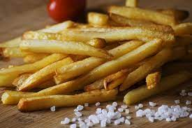

French Fries

French fries need no introduction as one of the favorite snack foods of modern society.
Ingredients
- Two large russet potatoes per person
- Vegetable oil
- Salt to taste
Steps
- Slice the potatoes a 1/2 inch thick.
- Soak them in cold water for atleast an hour or overnight
- Rinse them twice with cold water and pat them dry
- Heal oil to 300 degrees and fry in around 6 batches for 5-6 minutes. Take them out of the oil with a slotted spoon and place on a paper towel.
- Increase heat to 400 degrees, fry in batches until golden brown for about 5 minutes.
- Place them on paper towels and sprinkle immediately with salt. Enjoy with mayo, ketchup or any sauce you would like.